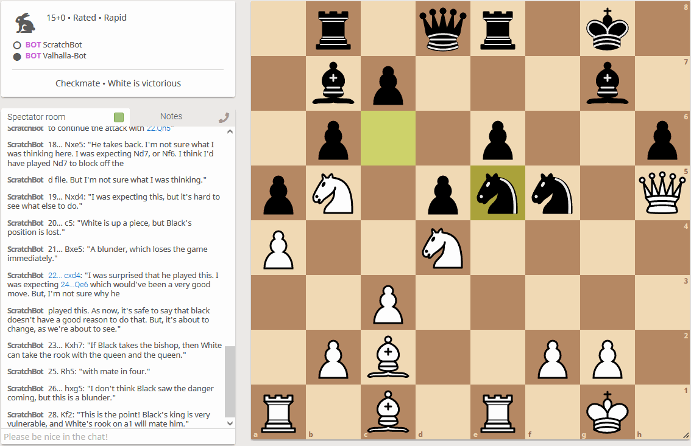

ChessCoach
– Chris ButnerA neural network-based chess engine capable of natural language commentary
Overview
 @PlayChessCoach on Lichess: Watch | Stats | Challenge (1+0 or 0+1 up to 15+10)
Introduction
ChessCoach is a neural network-based chess engine capable of natural-language commentary. It plays chess with a rating of approximately 3450 Elo, which means it should usually beat even the strongest human players at 2850 Elo, and many other engines, but will often lose to the strongest, such as Stockfish 14 at 3550 Elo.
As with all engines, ChessCoach relies on examining millions of chess positions to decide on the best move to play. It uses a large, slow neural network just like AlphaZero or Leela Chess Zero (Lc0) to evaluate each position, unlike classical engines which aim for speed with a much simpler evaluation, or more recent NNUE engines, which are a stronger hybrid of both styles.
The neural network at the core of the engine is trained by playing against itself, using a feedback cycle to start from almost zero knowledge – just the rules of chess – and learn new ways to beat itself as it grows stronger. Stronger neural network evaluations let it search better, and stronger search results let it train its neural network evaluation more effectively.
ChessCoach can also feed its chess knowledge into an additional neural network to comment on moves and positions in English. It is not very insightful and often wrong but shows some promise for the limited data it has been able to train on.
Motivation
I started developing ChessCoach as a two to three-month project to see whether I liked machine learning and ended up taking things further than I expected. The original plan had three overly ambitious goals: replicating a small AlphaZero-like engine, adding natural-language commentary to the training feedback cycle, and making some degree of training possible on a single-GPU workstation.
After a little over a year of development, I can claim almost no progress on training methods. However, I am happy with the commentary that ChessCoach produces, all things considered, and surprised at the eventual strength of the engine.
I was lucky to have so many public resources available, including free cloud compute and freely available papers, discussions and data. I am also very grateful to a number of folks who have helped with important clarifications, discussions and debugging.
Comparisons
The chess engine at the core of ChessCoach is very similar to that of AlphaZero (Silver et al., 2018) or Lc0 (Linscott & Pascutto, 2018), in the structure of the neural network, training schedule and search algorithm, but with a practical, engineering approach by necessity, lacking the breadth and depth of research talent of a larger team. However, I hope that there are a few new ideas that can be useful elsewhere.
The natural-language commentary piece is most like the work of Learning to Generate Move-by-Move Commentary for Chess Games from Large-Scale Social Forum Data (Jhamtani, Gangal, Hovy, Neubig & Berg-Kirkpatrick, 2018) and Automated Chess Commentator Powered by Neural Chess Engine (Zang, Yu & Wan, 2019), but relies on a more heavily trained chess engine and larger training corpus, albeit with more simplistic architecture.
Results
ChessCoach is designed to be somewhat minimal and portable. It runs on Linux and Windows and supports single-GPU, multi-GPU and Tensor Processing Units (TPUs). Performance-oriented code is in C++ (10.5k lines) and neural network code is in Python (3.7k lines), relying on TensorFlow 2. Stockfish code is used for position management, move generation and endgame tablebase probing, but not for search or evaluation. Self-play training data has been completely generated within the ChessCoach project, following the AlphaZero schedule of 44 million games and 700,000 training batches of 4,096 positions each.
Some ideas beyond AlphaZero but existing in literature and projects such as KataGo (Wu, 2020) and Lc0 have been integrated (often I thought I was trying something new, but it turns out smart folks at Lc0 have tried almost everything). These include mate-proving, endgame tablebase probing, endgame minimax, stochastic weight averaging (SWA), exponentially weighted moving averages (EWMA), various exploration incentives, prediction caching, auxiliary training targets, and knowledge distillation.
I believe that some ideas are new. The first is a search method that aims to avoid tactical traps and minimize simple regret via Linear Exploration and Selective Backpropagation, applied via elimination – SBLE-PUCT. The second is a simple neural architecture for natural-language commentary on positions and moves in conjunction with a tweaked application of nucleus sampling (top-p) focused on correctness-with-variety – COVET sampling.
The outcome is a suite of tools to play chess, train the neural networks, optimize parameters, test strength, process training data, view and debug training data, organize training data, unit-test, and coordinate clusters. To wrap up the project, a bot is set up at https://lichess.org/@/PlayChessCoach to play games against challengers and other bots, and provide commentary to spectators.
Measurements
On a newer-style v3-8 Cloud TPU VM:
- Approximate tournament Elo ratings of 3535 at 40/15 time, 3486 at 300+3 time, 3445 at 60+0.6 time, vs. Stockfish 14 with 8 threads, 8192 hash, 3-4-5 Syzygy, pinned to 3550 Elo (details)
- 125,000 nodes per second (NPS) (varying 68,000 - 141,000 with position) (details)
- 2,360 self-play games per hour (lots of room for improvement) (details)
- 3317 STS Elo estimation (commonly varying 3260 - 3350 with parameters) (details)
- 117 out of 199 Arasan21 score (commonly varying 118 - 126 with parameters) (details)
Programs, Files, Installation, Usage, Running tests
See the README on ChessCoach's GitHub for technical instructions.
Acknowledgements
Google's TPU Research Cloud (TRC) program has been exceptionally generous with computing resources that made this project possible, and I thank Jonathan Caton in particular for making things happen.
I'm very appreciative of Google's Cloud TPU team for the use of Cloud TPU VMs, and especially Michael Banfield for engineering assistance throughout the alpha of the new technology.
I sincerely thank Karlson Pfannschmidt (Paderborn University), whose Chess Tuning Tools and Bayes-skopt implementation, and advice on Bayesian optimization were invaluable in strengthening the ChessCoach engine.
I'm very grateful to Matthew Lai (DeepMind) for providing in an independent capacity, important clarifications on the AlphaZero paper.
I extend thanks to Pierre de Wulf for providing research credits for ScrapingBee to enable natural-language commentary training in ChessCoach.
Thank you to Ted Li for valuable ideas and discussions at the commencement of the project.
Thank you to Freya Wilcox for assistance with diagram prototyping.
And special thanks to Gary Butner and Lynelle Rafton for editing, proofreading and support.
License
ChessCoach is released under the GPLv3 or later license.
Contact
Chris Butner, chris.butner@outlook.com